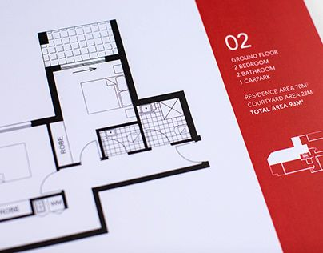
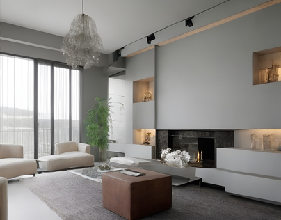

ABOUT US 關於築雋
理念－
築雋室內設計，凝聚匠心之美，建構夢想空間！
空間不僅是一個存在的場所，更是一種情感的表達，是品味與生活方式的體現。築雋－
由極具才華且充滿熱情的專業人才構成，擁有豐富的專業經驗和獨到的創意視野，致力於打造獨特且令人難以忘懷的室內外空間。
就讓築雋成為您夢想中的設計夥伴，無論是住宅、商業、公共空間都以獨特的眼光和深厚的設計功底為每個項目注入新的生命。
PROJECT 築雋作品
每個案例都是一次創意的冒險，每個故事都是一幅獨特的藝術畫卷。
我們不僅打造空間，更是編織著每個案例的故事，將夢想現實！
SERVICE 築雋服務

丈量與需求
以標準單位準確測量空間尺度，確保項目或系統的功能和性能。
精確的丈量對室內設計至關重要，明確的需求定義確保設計符合！
1.初步接洽
了解業主各項需求，起居環境、偏好、預算、進度之安排...等。
 2.丈量拍照
2.丈量拍照
設計師至現場與屋主溝通，並丈量尺度、拍照做為設計參考。
 3.草案規劃
3.草案規劃
初步規劃，開會溝通達成認同，確立設計輪廓。
設計與繪製
深思熟慮的設計概念，以細心的繪圖方式表達。
平立面及3D圖的呈現，使未知的空間更有現實感！
 4.設計委任
4.設計委任
簽立設計合約，依據草案設計與屋主研討並修正設計。
5.細部設計
依據定案設計建立3D圖、細部詳圖及圖說，並即時與屋主確認。
6.工程報價
施工設計圖說及選材完成，提供完整項目報價單。

施工與完工
高效執行，精心監控，確保完工。
有序施工計劃，嚴密監控進度，確保高效完工！
7.合約簽署
簽立工程合約，建立雙方信任，進入工程階段。
8.進度報告
現場工程進度拍照存查，回覆業主現況及問題解決方案。
 9.完工交屋
9.完工交屋
完工細清、驗收交屋、結案。
CONTACT 聯繫築雋
TEL：+886-2-28917919｜+886-922-383813
E-mail：jason9741106@gmail.com｜Line ID：jason_ting-yu
台北市北投區中央北路四段583巷33號一樓